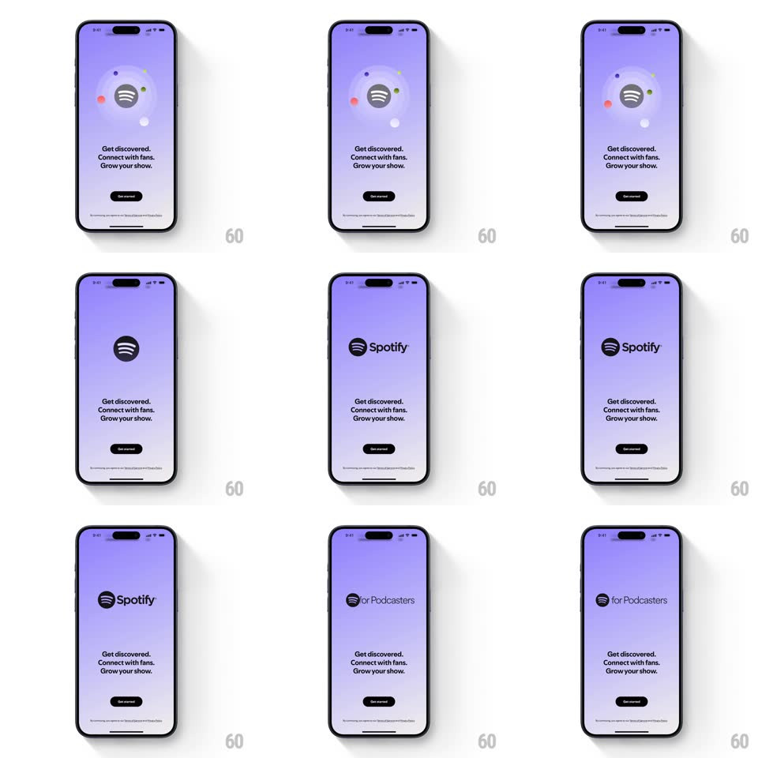

Media
Frame-by-frame

Rebuild this animation 1:1: Spotify for Podcasters' splash-to-onboarding - from a purple splash, the podcast glyph in a circle (orbited by small dots) morphs into the Spotify wordmark, then splits into the glyph + "for Podcasters" lockup above the value props.

Rebuild this animation 1:1: Spotify for Podcasters' splash-to-onboarding - from a purple splash, the podcast glyph in a circle (orbited by small dots) morphs into the Spotify wordmark, then splits into the glyph + "for Podcasters" lockup above the value props. ## Integration Integration: stack-agnostic spec - springs given as stiffness/damping, timed motions as duration + curve; map every value to your framework and animation library of choice. ## Scene Purple splash with "Spotify for Podcasters" lockup. Onboarding: lavender screen, Spotify glyph in a dark circle with orbiting colored dots, "Get discovered. Connect with fans. Grow your show." copy, black Get started pill. ## Motion spec Pattern: logo morph sequence. - Splash crossfades to lavender (400ms); the circled glyph scales in (spring ~300/20, ~500ms) while small colored dots orbit it (one revolution per ~6s, staggered radii). - The dots fly outward and fade (300ms) as the circle morphs: the glyph slides left and the word "Spotify" draws in beside it (letter stagger, 60ms each) - forming the standard wordmark. - The wordmark holds, then "Spotify" text slides away right and fades (300ms) while the glyph travels right and "for Podcasters" fades in next to it (300ms), settling into the final lockup. - Copy lines fade in one per beat (200ms each, 150ms apart); Get started rises 12px + fades last (300ms). ## Calibration - The glyph never disappears - every morph keeps it on screen as the anchor. - Orbit dots are the only looping element and they exit before the wordmark phase. ## Reduced motion Splash crossfades to the final lockup directly. ## Don't miss - Three distinct lockup states: circled glyph -> full "Spotify" wordmark -> glyph + "for Podcasters". - Copy sits below the lockup and never moves during the morphs.